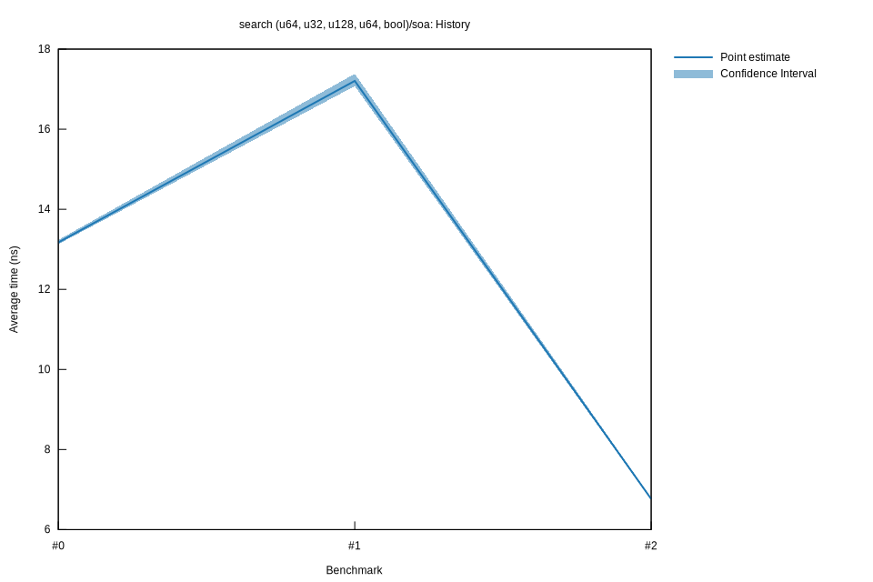

# 22023-02-24T22:37:32+01:00
|
Lower Bound |
Estimate |
Upper Bound |
| Value: |
6.74ns |
6.77ns |
6.79ns |
| Throughput: |
148.39Melem/s |
147.81Melem/s |
147.18Melem/s |
| Change in Value: |
-61.961% |
-61.311% |
-60.770% |
| Change in Throughput: |
+162.89% |
+158.47% |
+154.91% |
No change in performance detected.
# 12023-02-24T16:23:03+01:00
|
Lower Bound |
Estimate |
Upper Bound |
| Value: |
17.08ns |
17.21ns |
17.38ns |
| Throughput: |
58.56Melem/s |
58.12Melem/s |
57.53Melem/s |
| Change in Value: |
+29.945% |
+31.429% |
+33.514% |
| Change in Throughput: |
-23.045% |
-23.913% |
-25.102% |
No change in performance detected.
# 02023-02-24T15:52:04+01:00
|
Lower Bound |
Estimate |
Upper Bound |
| Value: |
13.13ns |
13.17ns |
13.23ns |
| Throughput: |
76.17Melem/s |
75.91Melem/s |
75.57Melem/s |